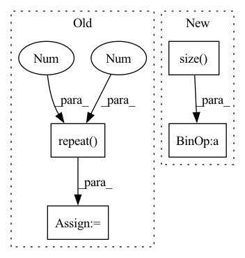

Pattern ID :35511
Before Change
// Time x num_batches x channels x width x height
// This is only set-up for MNIST/single channel data. To-fix.
time_data = data.repeat( data_config.T, 1, 1 , 1 , 1) *gain
// Clip all gain between 0 and 1: these are treated as probabilities in the next line.
time_data = torch.clamp(time_data, min=0, max=1)
// pass that entire time_data matrix into bernoulli.
spike_data = torch.bernoulli(time_data)
return spike_data, spike_targets
After Change
// Generate a tuple: (num_steps, 1, 1..., 1) where the number of 1"s = number of dimensions in the original data.
// Multiply by gain and add offset.
time_data = data.repeat(tuple([num_steps]+ torch.ones(len(data.size() ), dtype=int).tolist()))*gain+offset
spike_data = spike_train(time_data)
In pattern: SUPERPATTERN
Frequency: 3
Non-data size: 4
Instances Fragment ID: 101398409
Project Name: jeshraghian/snntorch
Commit Name: ec03b9bf96b0716254410656c7c8f69f602624c9
Time: 2020-11-26
Author: 40262130+jeshraghian@users.noreply.github.com
File Name: snntorch/spikevision/spikegen.py
M Class Name: AnonimousClass
N Class Name: AnonimousClass
M Method Name: spike_conversion(8)
N Method Name: spike_conversion(5)
M Parent Class:
N Parent Class:
M File Name: snntorch/spikevision/spikegen.py
N File Name: snntorch/spikevision/spikegen.py
M Start Line: 6
M End Line: 46
N Start Line: 9
N End Line: 52
Before Change
visual_emo_vecs = self.affineVisual(text_emo_vecs)
audio_emo_vecs = self.affineAudio(text_emo_vecs)
text_emo_vecs = text_emo_vecs.unsqueeze(0).repeat( batch_size, 1 , 1 )
visual_emo_vecs = visual_emo_vecs.unsqueeze(0).repeat(batch_size, 1, 1)
audio_emo_vecs = audio_emo_vecs.unsqueeze(0).repeat(batch_size, 1, 1)
text_attn_feature = self.attention(output_text, text_emo_vecs)
visual_attn_feature = self.attention(output_visual, visual_emo_vecs)
audio_attn_feature = self.attention(output_audio, audio_emo_vecs)
// TODO: try residual connection
logits = self.out(torch.cat((text_attn_feature, visual_attn_feature, audio_attn_feature), dim=1))
return logits
After Change
def forward(self, X_text, X_audio, X_visual):
// TODO: try residual connection
batch_size = X_text.size( 0)
logits = None
if "t" in self.modalities:
output_text, _ = self.RNNs[0](X_text)
output_text = output_text[:, -1, :]
text_emo_vecs_origin = self.textEmoEmbs(torch.LongTensor(list(range(self.num_classes))).to(self.device))
text_emo_vecs = text_emo_vecs_origin.unsqueeze(0).repeat(batch_size, 1, 1)
text_attn_weights = self.attention(output_text, text_emo_vecs)
logits = text_attn_weights if logits is None else logits + text_attn_weights
if "a" in self.modalities:
output_audio, _ = self.RNNs[1](X_audio) Fragment ID: 101398413
Project Name: wenliangdai/modality-transferable-mer
Commit Name: b0e565d11d6b3bf9f65fb1dcbdc8c641a2bc8054
Time: 2020-06-10
Author: wenliang.dai.1995@gmail.com
File Name: src/models/temp.py
M Class Name: EmotionEmbAttnModel
N Class Name: EmotionEmbAttnModel
M Method Name: forward(4)
N Method Name: forward(4)
M Parent Class: nn.Module
N Parent Class: nn.Module
M File Name: src/models/temp.py
N File Name: src/models/temp.py
M Start Line: 53
M End Line: 79
N Start Line: 70
N End Line: 96
Before Change
batch_size, _, embed_dim = x.size()
cls_tokens = self.cls_token.view(1, 1, embed_dim)
cls_tokens = cls_tokens.repeat( batch_size, 1 , 1 ) // (batch_size, num_patches, embed_dim)
x = torch.cat([cls_tokens, x], dim=1) // (batch_size, num_patches + 1, embed_dim)
x = x + self.pos_embeddingAfter Change
Returns:
output: (batch_size, num_classes)
batch_size = input.size( 0)
x = self.split_to_patch(input)
x = self.embedding(x) // (batch_size, num_patches, embed_dim)
cls_tokens = self.cls_token.repeat(batch_size, 1, 1) // (batch_size, num_patches, embed_dim)
x = torch.cat([cls_tokens, x], dim=1) // (batch_size, num_patches + 1, embed_dim)
x = x + self.positional_embedding
x = self.dropout1d(x)
x = self.transformer(x) // (batch_size, num_patches + 1, embed_dim)
x = self.pooling2d(x) // (batch_size, embed_dim) Fragment ID: 101398402
Project Name: tky823/dnn-based_source_separation
Commit Name: e7d608a92d86f489a93123a0858067c88e8ff0f0
Time: 2022-02-24
Author: delta9guitar97@gmail.com
File Name: src/models/vit.py
M Class Name: ViT
N Class Name: ViT
M Method Name: forward(2)
N Method Name: forward(2)
M Parent Class: nn.Module
N Parent Class: nn.Module
M File Name: src/models/vit.py
N File Name: src/models/vit.py
M Start Line: 65
M End Line: 73
N Start Line: 66
N End Line: 74